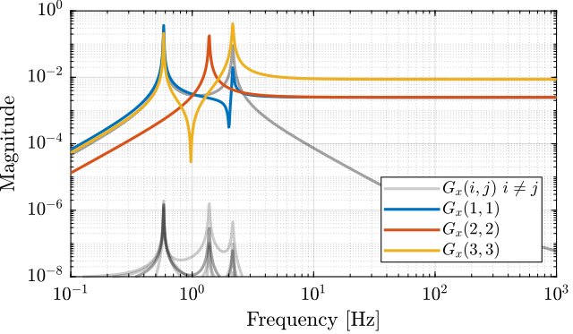
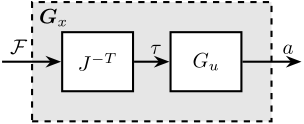

SVD Control
Table of Contents
- 1. Gravimeter - Simscape Model
- 1.1. Introduction
- 1.2. Simscape Model - Parameters
- 1.3. System Identification - Without Gravity
- 1.4. Physical Decoupling using the Jacobian
- 1.5. Real Approximation of \(G\) at the decoupling frequency
- 1.6. SVD Decoupling
- 1.7. Verification of the decoupling using the “Gershgorin Radii”
- 1.8. Obtained Decoupled Plants
- 1.9. Diagonal Controller
- 1.10. Closed-Loop system Performances
- 2. Stewart Platform - Simscape Model
- 2.1. Simscape Model - Parameters
- 2.2. Identification of the plant
- 2.3. Physical Decoupling using the Jacobian
- 2.4. Real Approximation of \(G\) at the decoupling frequency
- 2.5. SVD Decoupling
- 2.6. Verification of the decoupling using the “Gershgorin Radii”
- 2.7. Obtained Decoupled Plants
- 2.8. Diagonal Controller
- 2.9. Closed-Loop system Performances
1 Gravimeter - Simscape Model
1.1 Introduction

Figure 1: Model of the gravimeter
1.2 Simscape Model - Parameters
open('gravimeter.slx')
Parameters
l = 1.0; % Length of the mass [m] h = 1.7; % Height of the mass [m] la = l/2; % Position of Act. [m] ha = h/2; % Position of Act. [m] m = 400; % Mass [kg] I = 115; % Inertia [kg m^2] k = 15e3; % Actuator Stiffness [N/m] c = 0.03; % Actuator Damping [N/(m/s)] deq = 0.2; % Length of the actuators [m] g = 0; % Gravity [m/s2]
1.3 System Identification - Without Gravity
%% Name of the Simulink File mdl = 'gravimeter'; %% Input/Output definition clear io; io_i = 1; io(io_i) = linio([mdl, '/F1'], 1, 'openinput'); io_i = io_i + 1; io(io_i) = linio([mdl, '/F2'], 1, 'openinput'); io_i = io_i + 1; io(io_i) = linio([mdl, '/F3'], 1, 'openinput'); io_i = io_i + 1; io(io_i) = linio([mdl, '/Acc_side'], 1, 'openoutput'); io_i = io_i + 1; io(io_i) = linio([mdl, '/Acc_side'], 2, 'openoutput'); io_i = io_i + 1; io(io_i) = linio([mdl, '/Acc_top'], 1, 'openoutput'); io_i = io_i + 1; io(io_i) = linio([mdl, '/Acc_top'], 2, 'openoutput'); io_i = io_i + 1; G = linearize(mdl, io); G.InputName = {'F1', 'F2', 'F3'}; G.OutputName = {'Ax1', 'Az1', 'Ax2', 'Az2'};
The inputs and outputs of the plant are shown in Figure 2.

Figure 2: Schematic of the gravimeter plant
We can check the poles of the plant:
-0.000183495485977108 + 13.546056874877i -0.000183495485977108 - 13.546056874877i -7.49842878906757e-05 + 8.65934902322567i -7.49842878906757e-05 - 8.65934902322567i -1.33171230256362e-05 + 3.64924169037897i -1.33171230256362e-05 - 3.64924169037897i
The plant as 6 states as expected (2 translations + 1 rotation)
size(G)
State-space model with 4 outputs, 3 inputs, and 6 states.
The bode plot of all elements of the plant are shown in Figure 3.

Figure 3: Open Loop Transfer Function from 3 Actuators to 4 Accelerometers
1.4 Physical Decoupling using the Jacobian
Consider the control architecture shown in Figure 4.
The Jacobian matrix \(J_{\tau}\) is used to transform forces applied by the three actuators into forces/torques applied on the gravimeter at its center of mass. The Jacobian matrix \(J_{a}\) is used to compute the vertical acceleration, horizontal acceleration and rotational acceleration of the mass with respect to its center of mass.
We thus define a new plant as defined in Figure 4. \[ G_x(s) = J_a G(s) J_{\tau}^{-T} \]
\(G_x(s)\) correspond to the transfer function from forces and torques applied to the gravimeter at its center of mass to the absolute acceleration of the gravimeter’s center of mass.

Figure 4: Decoupled plant \(\bm{G}_x\) using the Jacobian matrix \(J\)
The jacobian corresponding to the sensors and actuators are defined below.
Ja = [1 0 h/2 0 1 -l/2 1 0 -h/2 0 1 0]; Jt = [1 0 ha 0 1 -la 0 1 la];
Gx = pinv(Ja)*G*pinv(Jt'); Gx.InputName = {'Fx', 'Fz', 'My'}; Gx.OutputName = {'Dx', 'Dz', 'Ry'};
The diagonal and off-diagonal elements of \(G_x\) are shown in Figure 5.

Figure 5: Diagonal and off-diagonal elements of \(G_x\)
1.5 Real Approximation of \(G\) at the decoupling frequency
Let’s compute a real approximation of the complex matrix \(H_1\) which corresponds to the the transfer function \(G_u(j\omega_c)\) from forces applied by the actuators to the measured acceleration of the top platform evaluated at the frequency \(\omega_c\).
wc = 2*pi*10; % Decoupling frequency [rad/s] H1 = evalfr(G, j*wc);
The real approximation is computed as follows:
D = pinv(real(H1'*H1)); H1 = inv(D*real(H1'*diag(exp(j*angle(diag(H1*D*H1.'))/2))));
| 0.0026 | -3.7e-05 | 3.7e-05 |
| 1.9e-10 | 0.0025 | 0.0025 |
| -0.0078 | 0.0045 | -0.0045 |
1.6 SVD Decoupling
First, the Singular Value Decomposition of \(H_1\) is performed: \[ H_1 = U \Sigma V^H \]
[U,~,V] = svd(H1);
The obtained matrices \(U\) and \(V\) are used to decouple the system as shown in Figure 6.

Figure 6: Decoupled plant \(\bm{G}_{SVD}\) using the Singular Value Decomposition
The decoupled plant is then: \[ G_{SVD}(s) = U^{-1} G_u(s) V^{-H} \]
Gsvd = inv(U)*G*inv(V');
The diagonal and off-diagonal elements of the “SVD” plant are shown in Figure 7.

Figure 7: Diagonal and off-diagonal elements of \(G_{svd}\)
1.7 Verification of the decoupling using the “Gershgorin Radii”
The “Gershgorin Radii” is computed for the coupled plant \(G(s)\), for the “Jacobian plant” \(G_x(s)\) and the “SVD Decoupled Plant” \(G_{SVD}(s)\):
The “Gershgorin Radii” of a matrix \(S\) is defined by: \[ \zeta_i(j\omega) = \frac{\sum\limits_{j\neq i}|S_{ij}(j\omega)|}{|S_{ii}(j\omega)|} \]
This is computed over the following frequencies.
freqs = logspace(-2, 2, 1000); % [Hz]

Figure 8: Gershgorin Radii of the Coupled and Decoupled plants
1.8 Obtained Decoupled Plants
The bode plot of the diagonal and off-diagonal elements of \(G_{SVD}\) are shown in Figure 9.

Figure 9: Decoupled Plant using SVD
Similarly, the bode plots of the diagonal elements and off-diagonal elements of the decoupled plant \(G_x(s)\) using the Jacobian are shown in Figure 10.

Figure 10: Gravimeter Platform Plant from forces (resp. torques) applied by the legs to the acceleration (resp. angular acceleration) of the platform as well as all the coupling terms between the two (non-diagonal terms of the transfer function matrix)
1.9 Diagonal Controller
The control diagram for the centralized control is shown in Figure 11.
The controller \(K_c\) is “working” in an cartesian frame. The Jacobian is used to convert forces in the cartesian frame to forces applied by the actuators.

Figure 11: Control Diagram for the Centralized control
The SVD control architecture is shown in Figure 12. The matrices \(U\) and \(V\) are used to decoupled the plant \(G\).

Figure 12: Control Diagram for the SVD control
We choose the controller to be a low pass filter: \[ K_c(s) = \frac{G_0}{1 + \frac{s}{\omega_0}} \]
\(G_0\) is tuned such that the crossover frequency corresponding to the diagonal terms of the loop gain is equal to \(\omega_c\)
wc = 2*pi*80; % Crossover Frequency [rad/s] w0 = 2*pi*0.1; % Controller Pole [rad/s]
K_cen = diag(1./diag(abs(evalfr(Gx, j*wc))))*(1/abs(evalfr(1/(1 + s/w0), j*wc)))/(1 + s/w0); L_cen = K_cen*Gx; G_cen = feedback(G, pinv(J')*K_cen, [7:12], [1:6]);
K_svd = diag(1./diag(abs(evalfr(Gsvd, j*wc))))*(1/abs(evalfr(1/(1 + s/w0), j*wc)))/(1 + s/w0); L_svd = K_svd*Gsvd; G_svd = feedback(G, inv(V')*K_svd*inv(U), [7:12], [1:6]);
The obtained diagonal elements of the loop gains are shown in Figure 13.

Figure 13: Comparison of the diagonal elements of the loop gains for the SVD control architecture and the Jacobian one
1.10 Closed-Loop system Performances
Let’s first verify the stability of the closed-loop systems:
isstable(G_cen)
ans = logical 1
isstable(G_svd)
ans = logical 1
The obtained transmissibility in Open-loop, for the centralized control as well as for the SVD control are shown in Figure 14.

Figure 14: Obtained Transmissibility
2 Stewart Platform - Simscape Model
In this analysis, we wish to applied SVD control to the Stewart Platform shown in Figure 15.
Some notes about the system:
- 6 voice coils actuators are used to control the motion of the top platform.
- the motion of the top platform is measured with a 6-axis inertial unit (3 acceleration + 3 angular accelerations)
- the control objective is to isolate the top platform from vibrations coming from the bottom platform
Figure 15: Stewart Platform CAD View
The analysis of the SVD control applied to the Stewart platform is performed in the following sections:
- Section 2.1: The parameters of the Simscape model of the Stewart platform are defined
- Section 2.2: The plant is identified from the Simscape model and the system coupling is shown
- Section 2.3: The plant is first decoupled using the Jacobian
- Section 2.4: A real approximation of the plant is computed for further decoupling using the Singular Value Decomposition (SVD)
- Section 2.5: The decoupling is performed thanks to the SVD
- Section 1.7: The effectiveness of the decoupling with the Jacobian and SVD are compared using the Gershorin Radii
- Section 2.7: The dynamics of the decoupled plants are shown
- Section 2.8: A diagonal controller is defined to control the decoupled plant
- Section 2.9: Finally, the closed loop system properties are studied
2.1 Simscape Model - Parameters
open('drone_platform.slx');
Definition of spring parameters:
kx = 0.5*1e3/3; % [N/m] ky = 0.5*1e3/3; kz = 1e3/3; cx = 0.025; % [Nm/rad] cy = 0.025; cz = 0.025;
Gravity:
g = 0;
We load the Jacobian (previously computed from the geometry):
load('./jacobian.mat', 'Aa', 'Ab', 'As', 'l', 'J');
We initialize other parameters:
U = eye(6); V = eye(6); Kc = tf(zeros(6));

Figure 16: General view of the Simscape Model
Figure 17: Simscape model of the Stewart platform
2.2 Identification of the plant
The plant shown in Figure 18 is identified from the Simscape model.
The inputs are:
- \(D_w\) translation and rotation of the bottom platform (with respect to the center of mass of the top platform)
- \(\tau\) the 6 forces applied by the voice coils
The outputs are the 6 accelerations measured by the inertial unit.

Figure 18: Considered plant \(\bm{G} = \begin{bmatrix}G_d\\G_u\end{bmatrix}\). \(D_w\) is the translation/rotation of the support, \(\tau\) the actuator forces, \(a\) the acceleration/angular acceleration of the top platform
%% Name of the Simulink File mdl = 'drone_platform'; %% Input/Output definition clear io; io_i = 1; io(io_i) = linio([mdl, '/Dw'], 1, 'openinput'); io_i = io_i + 1; % Ground Motion io(io_i) = linio([mdl, '/V-T'], 1, 'openinput'); io_i = io_i + 1; % Actuator Forces io(io_i) = linio([mdl, '/Inertial Sensor'], 1, 'openoutput'); io_i = io_i + 1; % Top platform acceleration G = linearize(mdl, io); G.InputName = {'Dwx', 'Dwy', 'Dwz', 'Rwx', 'Rwy', 'Rwz', ... 'F1', 'F2', 'F3', 'F4', 'F5', 'F6'}; G.OutputName = {'Ax', 'Ay', 'Az', 'Arx', 'Ary', 'Arz'}; % Plant Gu = G(:, {'F1', 'F2', 'F3', 'F4', 'F5', 'F6'}); % Disturbance dynamics Gd = G(:, {'Dwx', 'Dwy', 'Dwz', 'Rwx', 'Rwy', 'Rwz'});
There are 24 states (6dof for the bottom platform + 6dof for the top platform).
size(G)
State-space model with 6 outputs, 12 inputs, and 24 states.
The elements of the transfer matrix \(\bm{G}\) corresponding to the transfer function from actuator forces \(\tau\) to the measured acceleration \(a\) are shown in Figure 19.
One can easily see that the system is strongly coupled.
Figure 19: Magnitude of all 36 elements of the transfer function matrix \(G_u\)
2.3 Physical Decoupling using the Jacobian
Consider the control architecture shown in Figure 20. The Jacobian matrix is used to transform forces/torques applied on the top platform to the equivalent forces applied by each actuator.

Figure 20: Decoupled plant \(\bm{G}_x\) using the Jacobian matrix \(J\)
We define a new plant: \[ G_x(s) = G(s) J^{-T} \]
\(G_x(s)\) correspond to the transfer function from forces and torques applied to the top platform to the absolute acceleration of the top platform.
Gx = Gu*inv(J'); Gx.InputName = {'Fx', 'Fy', 'Fz', 'Mx', 'My', 'Mz'};
2.4 Real Approximation of \(G\) at the decoupling frequency
Let’s compute a real approximation of the complex matrix \(H_1\) which corresponds to the the transfer function \(G_u(j\omega_c)\) from forces applied by the actuators to the measured acceleration of the top platform evaluated at the frequency \(\omega_c\).
wc = 2*pi*30; % Decoupling frequency [rad/s] H1 = evalfr(Gu, j*wc);
The real approximation is computed as follows:
D = pinv(real(H1'*H1)); H1 = inv(D*real(H1'*diag(exp(j*angle(diag(H1*D*H1.'))/2))));
| 4.4 | -2.1 | -2.1 | 4.4 | -2.4 | -2.4 |
| -0.2 | -3.9 | 3.9 | 0.2 | -3.8 | 3.8 |
| 3.4 | 3.4 | 3.4 | 3.4 | 3.4 | 3.4 |
| -367.1 | -323.8 | 323.8 | 367.1 | 43.3 | -43.3 |
| -162.0 | -237.0 | -237.0 | -162.0 | 398.9 | 398.9 |
| 220.6 | -220.6 | 220.6 | -220.6 | 220.6 | -220.6 |
Note that the plant \(G_u\) at \(\omega_c\) is already an almost real matrix. This can be seen on the Bode plots where the phase is close to 1. This can be verified below where only the real value of \(G_u(\omega_c)\) is shown
| 4.4 | -2.1 | -2.1 | 4.4 | -2.4 | -2.4 |
| -0.2 | -3.9 | 3.9 | 0.2 | -3.8 | 3.8 |
| 3.4 | 3.4 | 3.4 | 3.4 | 3.4 | 3.4 |
| -367.1 | -323.8 | 323.8 | 367.1 | 43.3 | -43.3 |
| -162.0 | -237.0 | -237.0 | -162.0 | 398.9 | 398.9 |
| 220.6 | -220.6 | 220.6 | -220.6 | 220.6 | -220.6 |
2.5 SVD Decoupling
First, the Singular Value Decomposition of \(H_1\) is performed: \[ H_1 = U \Sigma V^H \]
[U,~,V] = svd(H1);
The obtained matrices \(U\) and \(V\) are used to decouple the system as shown in Figure 21.

Figure 21: Decoupled plant \(\bm{G}_{SVD}\) using the Singular Value Decomposition
The decoupled plant is then: \[ G_{SVD}(s) = U^{-1} G_u(s) V^{-H} \]
Gsvd = inv(U)*Gu*inv(V');
2.6 Verification of the decoupling using the “Gershgorin Radii”
The “Gershgorin Radii” is computed for the coupled plant \(G(s)\), for the “Jacobian plant” \(G_x(s)\) and the “SVD Decoupled Plant” \(G_{SVD}(s)\):
The “Gershgorin Radii” of a matrix \(S\) is defined by: \[ \zeta_i(j\omega) = \frac{\sum\limits_{j\neq i}|S_{ij}(j\omega)|}{|S_{ii}(j\omega)|} \]
This is computed over the following frequencies.
freqs = logspace(-2, 2, 1000); % [Hz]
Figure 22: Gershgorin Radii of the Coupled and Decoupled plants
2.7 Obtained Decoupled Plants
The bode plot of the diagonal and off-diagonal elements of \(G_{SVD}\) are shown in Figure 9.
Figure 23: Decoupled Plant using SVD
Similarly, the bode plots of the diagonal elements and off-diagonal elements of the decoupled plant \(G_x(s)\) using the Jacobian are shown in Figure 10.
Figure 24: Stewart Platform Plant from forces (resp. torques) applied by the legs to the acceleration (resp. angular acceleration) of the platform as well as all the coupling terms between the two (non-diagonal terms of the transfer function matrix)
2.8 Diagonal Controller
The control diagram for the centralized control is shown in Figure 11.
The controller \(K_c\) is “working” in an cartesian frame. The Jacobian is used to convert forces in the cartesian frame to forces applied by the actuators.
Figure 25: Control Diagram for the Centralized control
The SVD control architecture is shown in Figure 12. The matrices \(U\) and \(V\) are used to decoupled the plant \(G\).
Figure 26: Control Diagram for the SVD control
We choose the controller to be a low pass filter: \[ K_c(s) = \frac{G_0}{1 + \frac{s}{\omega_0}} \]
\(G_0\) is tuned such that the crossover frequency corresponding to the diagonal terms of the loop gain is equal to \(\omega_c\)
wc = 2*pi*80; % Crossover Frequency [rad/s] w0 = 2*pi*0.1; % Controller Pole [rad/s]
K_cen = diag(1./diag(abs(evalfr(Gx, j*wc))))*(1/abs(evalfr(1/(1 + s/w0), j*wc)))/(1 + s/w0); L_cen = K_cen*Gx; G_cen = feedback(G, pinv(J')*K_cen, [7:12], [1:6]);
K_svd = diag(1./diag(abs(evalfr(Gsvd, j*wc))))*(1/abs(evalfr(1/(1 + s/w0), j*wc)))/(1 + s/w0); L_svd = K_svd*Gsvd; G_svd = feedback(G, inv(V')*K_svd*inv(U), [7:12], [1:6]);
The obtained diagonal elements of the loop gains are shown in Figure 27.

Figure 27: Comparison of the diagonal elements of the loop gains for the SVD control architecture and the Jacobian one
2.9 Closed-Loop system Performances
Let’s first verify the stability of the closed-loop systems:
isstable(G_cen)
ans = logical 1
isstable(G_svd)
ans = logical 1
The obtained transmissibility in Open-loop, for the centralized control as well as for the SVD control are shown in Figure 28.

Figure 28: Obtained Transmissibility